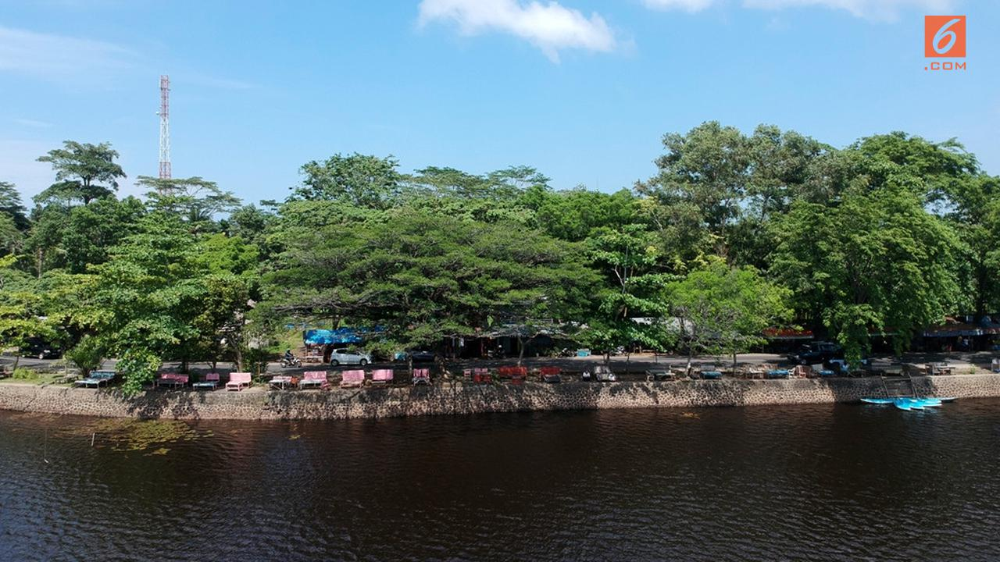
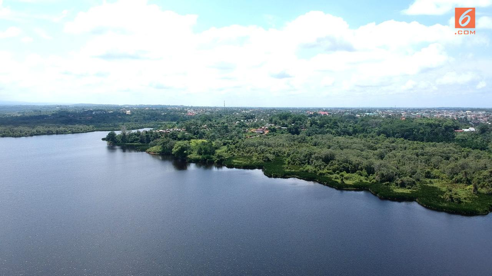
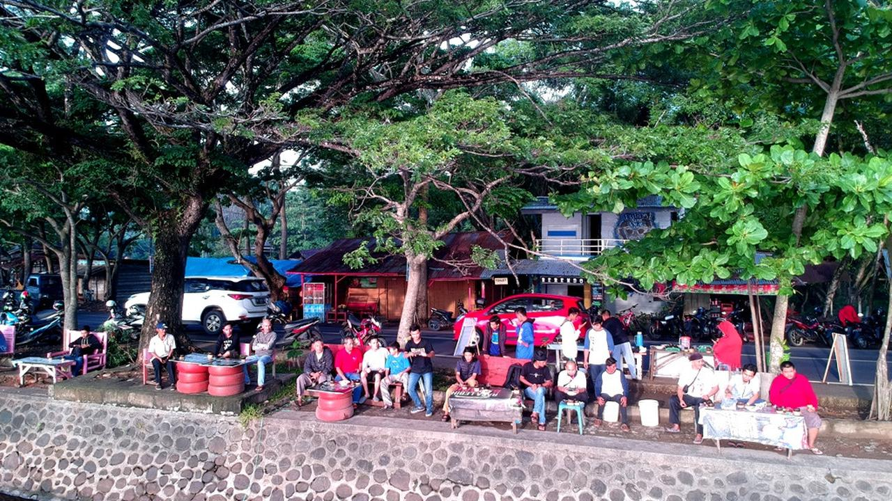

Diposting Oleh Yuliardi Hardjo Putro, Moch. Harun Syah

Liputan6.com, Bengkulu - Banyak cara yang dilakukan generasi muda untuk mengambil peran pembangunan di daerah. Salah satunya dilakukan para pemuda yang tergabung dalam Forum Pemuda Peduli Bengkulu (FPPB). Mereka berupaya untuk mendorong perkembangan sektor pariwisata.
Ketua FPPB Feri Vandalis menjelaskan, seriap hari minggu pagi, mereka bersama 70 komunitas yang tergabung dalam forum ini menggelar ngopi bareng di kawasan Cagar Alam Danau Dendam Tak Sudah (CA DDTS) yang juga merupakan salah satu potensi wisata dalam kota Bengkulu.
"Kami menyebutnya dengan istilah "Neron" bareng, tidak hanya minum kopi, kami juga berdiskusi tentang banyak hal," ujar Feri kepada Liputan6.com di Bengkulu Minggu (28/10/2018).
Status kawasan yang tercatat sebagai aset negara berupa Cagar Alam yang dikuasai Kementrian Kehutanan dan Lingkungan Hidup, membuat kawasan ini sulit untuk dikembangkan. Banyak keterbatasan yang diatur dalam undang-undang, sehingga jika ingin dikelola secara profesional akan terbentur aturan.
Pihaknya bersama para anggota forum berupaya mendesak pemerintah pusat untuk menurunkan status kawasan menjadi Taman Wisata Alam atau TWA.
Sebab posisi danau yang berada di jantung Kota Bengkulu dan potensi danau yang sangat indah sangat disayangkan jika tidak dikembangkan dengan baik.
"Tentu saja dukungan semua pihak, terutama pemerintah daerah Bengkulu sangat dibutuhkan, kami tidak bisa bergerak sendiri," tegas Feri.
BKSDA Tunggu Verifikasi KLKH

Permintaan penurunan status kawasan dari Cagar Alam menjadi Taman Wisata Alam ini ternyata sudah direspon Balai Konservasi dan Sumber Daya Alam (BKSDA). Mereka sudah mengirimkan permohonan dan menunggu verifikasi oleh tim Kementrian Kehutanan dan Lingkungan Hidup (KLHK).
Koordinator BKSDA Kota Bengkulu Agung Tri Djatmiko menjelaskan, pekan depan, tim akan turun ke Bengkulu dan melakukan verifikasi. Pihaknya meminta supaya para pemangku kebijakan di Bengkulu bisa memperkuat argumentasi supaya penetapan status kawasan ini bisa berjalan baik.
"Verifikasi dilakukan pekan depan, semoga permohonan ini dikabulkan," ungkap Agung.
Salah seorang tokoh pemuda Bengkulu Bima Eka Putra menyatakan, jika status kawasan sudah diturunkan, maka akan ada investasi yang masuk untuk membangun berbagai fasilitas. Tujuannya tentu saja akan menjadi salah satu destinasi pariwisata dan akan menarik para wisatawan untuk datang ke Bengkulu.
Danau Dendam Tak Sudah memiliki sejarah panjang dan kisah menarik bagi warga Kota Bengkulu khususnya Suku Lembak yang mendiami kawasan ini.
Masyarakat yang mencoba mengais rezeki dengan berjualan di sekitar danau sempat menjadi bulan bulanan pihak kemananan karena memang aturan yang melarang aktifikas mereka.
"Setidaknya, warga sekitar danau bisa menjadikan kawasan ini sebagai sumber perekonomian keluarga," tukas Bima.
========================================3 dari 3 Halaman======================================
Pemuda Siapkan Kopi Gratis

Bagi para penggila kopi, pagi hari belum lengkap jika belum minum kopi. Para pengopi biasanya mencari suasana yang dekat dengan alam, tenang dan sejuk.Komunitas "Tobo Berendo" yang menghimpun para pemuda Kota Bengkulu ternyata punya cara unik untuk minum kopi pagi.
Mereka berkumpul di tepi Cagar Alam Danau Dendam Tak Sudah (DDTS) untuk ngopi bareng sambil berdiskusi tentang banyak hal.
Mereka sangat terbuka kepada siapapun untuk ikut bergabung, bahkan kopi gratis mereka siapkan untuk masyarakat. Bagi yang tidak minum kopi, tenang saja, mereka juga menyediakan teh manis. Semuanya diseduh dalam wadah sejenis cangkir yang terbuat dari batok kelapa.
Ketua Komunitas Tobo Berendo, Dedi Setiadi atau akrab disapa Sucenk menjelaskan, budaya ngopi yang menjadi kebiasaan masyarakat SUku Lembak Bengkulu menyebut ngopi bersama sambil ngobrol di pagi hari itu dengan istilah "Neron". Danau Dendam dipilih karena memiliki panorama yang indah saat matahari terbit atau Sunrise.
"Setiap hari minggu jam enam hingga delapan pagi, ayo neron bareng disini, gratis," ujar Sucenk.
Salah seorang pengunjung Danau Dendam, Andre Herodes menyambut gembira kegitan ngopi gratis ini. Selain bisa berkumpul dan berdiskusi dengan para pemuda, dia juga bisa berolahraga pagi dengan udara yang sejuk dan bersih di pagi hari.
"Olahraga, refreshing, sambil ngopi gratis," kata Herodes.